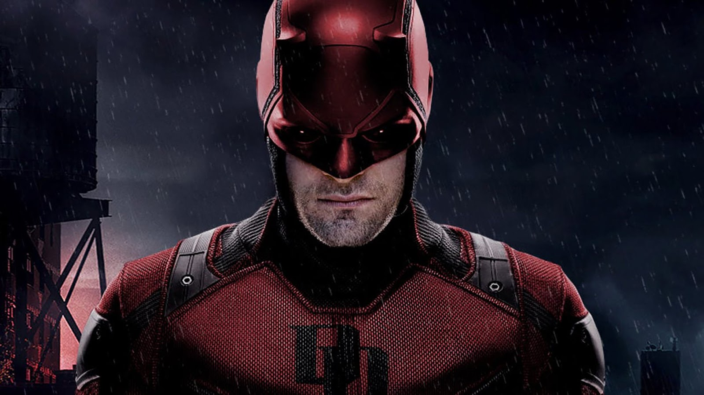

About Daredevil
Daredevil aka Matt Murdock, is a blind lawyer-by-day who fights crime as a masked vigilante by night in Hell’s Kitchen, New York.
Daredevil watching over Hell's Kitchen
Daredevil's characteristics
- He lost his sight after chemicals blinded him in a car accident during in is childhood.
- He gained extrasensory ablities and developed his senses to become a formidable fighter.
- When he isn't defending victims as an attorney by day he secretly fights criminals throughout Hell's Kitchen by night.
Daredevil's friends
Along his journey, Daredevil encounters friends and foes. Click on the links below to learn more about them.
- Foggy Nelson is Matt's long life best friend and his law partner of ‘Nelson and Murdock’.
- Karen Page works as a secretary for the law firm ‘Nelson and Murdock’ and is Daredevil’s love interest.
- Claire Tempel is a night shift nurse who works at Metro-General Hospital and takes care of Daredevil whenever he is injured during his missions.
- Wilson Fisk is the most feared, dangerous and powerful crime lords of New York, is Daredevil’s archenemy.